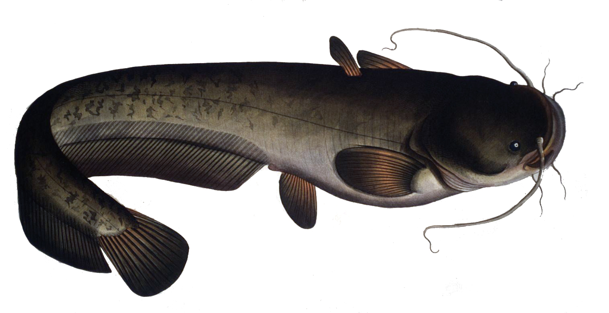

Mahendra Mariadassou (INRAE - MaIAGE)
Germà Coenders (Universitat de Girona)
JES 2022
\[ \def\vect#1{{\mathbf{#1}}} \def\CS{{\mathcal{S}}} \def\CC{{\mathcal{C}}} \def\RR{{\mathbb{R}}} \def\xlr{{\text{xlr}}} \def\alr{{\text{alr}}} \def\clr{{\text{clr}}} \def\ilr{{\text{ilr}}} \]
Important
Rappelons-nous que si \(\vect{x}\) est une composition, sa transformation \(\xlr(\vect{x})\) peut se réécrire
\[ \xlr(\vect{x}) = \vect{A} \log(\vect{x}) \] pour une matrice \(\vect{A}\) bien choisie.
Mais \(\log(0) = -\infty\), ce qui pose problème dans l’expression \(\vect{A} \log(\vect{x})\)…
C’est pourquoi la définition de \(\CS^D\) impose \(x_j > 0\) pour tout \(j = 1,\dots,D\).
Malheureusement, il arrive fréquemment qu’on ait des compositions avec des \(0\).
Les zéros peuvent provenir de données indirectes, comme les compositions reconstruites à partir d’observations.
Composition estimée en faisant des captures le long de la rivière
| Poisson | Gardon | Chevesne | Vandoise | Silure |
|---|---|---|---|---|
| Composition réelle | 0.547 | 0.337 | 0.111 | 0.005 |
| Nombre de captures | 108 | 64 | 28 | 0 |
| Composition estimée | 0.59 | 0.32 | 0.14 | 0 |

Si un poisson n’est jamais capturé en un site, sa composante est à \(0\), comme ici pour la silure .
Données issues de Les 0 peuvent aussi apparaîtrent à cause de limites de détection (concentration trop faible pour être mesurée). On parle alors de censure à gauche.
| Composition | Cr | B | P | V | Cu | Ti | Ni |
|---|---|---|---|---|---|---|---|
| \(\vect{x}_1\) | 27.50 | 17 | 148 | 29 | 2.70 | 4335 | 0 |
| \(\vect{x}_2\) | 30.40 | 23 | 433 | 42 | 3.80 | 3305 | 16.60 |
| \(\vect{x}_3\) | 25.60 | 14 | 135 | 33 | 0 | 3925 | 14.20 |
Certains éléments sont présents en concentrations trop faibles pour être détectés, par exemple le Cuivre et le Nickel.
Cuivre et Nickel
Dans les deux exemples précédent (absence de silure / de cuivre), le \(0\)
n’est en pas réellement un: le poisson / métal est présent en faible abondance plutôt que réellement absent.
pose problème pour les représentations log-ratio
Il est donc souhaitable d’imputer les \(0\) par des valeurs faibles mais non nulles avant de faire des analyses. Le package R zCompositions (Javier Palarea-Albaladejo and Martı́n-Fernández 2015) propose de nombreuses méthodes pour ce faire:
imputation multiplicatives pour compositions mesurées directement
imputation bayèsienne (Josep-Antoni Martı́n-Fernández et al. 2015) pour compositions discrètes.
Cette méthode non-paramétrique (multiplicative simple replacement, implémentée dans zCompositions::multRepl()) consiste en:
Definition 1 Si on note \(\mathbf{\kappa} = (\kappa_1, \dots, \kappa_D)\) le vecteur des limites de détection et \(\vect{x}\) une composition avec des zéros, l’imputation est définie en remplaçant les zéros:
\[ \tilde{x}_j = \begin{cases} 0.65 \kappa_j & \text{ si } x_j < \kappa_j \\ x_j & \text{ sinon} \end{cases} \]
avant de faire une correction multiplicative et une clotûre pour ramener le total à \(1\):
\[ \hat{x}_j = \begin{cases} \tilde{x}_j & \text{ si } \tilde{x}_j < \kappa_j \\ \tilde{x}_j \left(1 - \sum_{\{k : \tilde{x}_{k} < \kappa_k\}} \tilde{x}_k \right) & \text{ sinon} \end{cases}. \]
Méthode simple et rapide mais
Cette méthode paramétrique (multiplicative log-normal replacement, implémentée dans zCompositions::multLN()) s’appuie sur une hypothèse de distribution log-normale avec censure à gauche.
On se concentre sur la composante \(x_j\) de limite de détection \(\kappa_j\). En l’absence de censure, on suppose que \(x_j \sim \mathcal{LN}(\mu_j, \sigma^2_j)\) a pour densité:
\[ f(x) = \frac{1}{x} \phi\left( \frac{\log(x) - \mu}{\sigma}\right) = \frac{1}{x\sigma\sqrt{2\pi}} \exp\left( \frac{(\log(x) - \mu)^2}{2\sigma^2}\right) \]
où \(\phi\) désigne la densité de la loi gaussienne \(\mathcal{N}(0, 1)\) et l’indice \(j\) est omis.
Du fait de la censure à gauche en \(\kappa_j\), la densité de \(x_j\) est en fait
\[ f_c(x) = \begin{cases} \frac{1}{x} \phi\left( \frac{\log(x) - \mu}{\sigma}\right) & \text{ si } x \geq \kappa \\ \Phi\left( \frac{\log(\kappa) - \mu}{\sigma}\right) & \text{ si } x = 0 \\ \end{cases} \]
où \(\Phi\) est la fonction de répartition de la loi gaussienne \(\mathcal{N}(0, 1)\).
Si \(X \sim \mathcal{LN}(\mu, \sigma^2)\), la moyenne de \(X\) conditionnellement à censure en \(\kappa\) est donnée par:
\[ \mathbb{E}[X | X < \kappa] = \exp\left(\mu + \frac{\sigma^2}{2} \right) \frac{\Phi\left( \frac{\log(\kappa) - \mu - \sigma^2}{\sigma}\right)}{\Phi\left( \frac{\log(\kappa) - \mu}{\sigma}\right)} \]
Si \(Y \sim \mathcal{LN}(\mu, \sigma^2)\), l’espérance de \(Y\) conditionnellement à une censure en \(\log(\kappa)\) est donnée par:
\[ \mathbb{E}[Y | Y < \log\kappa] = \mu - \sigma \lambda \quad \text{avec} \quad \lambda = \frac{\phi\left( \frac{\log\kappa - \mu}{\sigma}\right)}{\Phi\left( \frac{\log\kappa - \mu}{\sigma}\right)}. \]
Definition 2 Si on note \(\mathbf{\kappa} = (\kappa_1, \dots, \kappa_D)\) le vecteur des limites de détection et \(\vect{x}\) une composition avec des zéros, l’imputation est définie
en estimant de façon robuste les paramètres \((\mu, \sigma^2)\)
\[ \forall j \in \{1, \dots, D\}, (\hat{\mu}_j, \hat{\sigma}^2_j) = \arg\max F(x_{1j}, \dots, x_{nj}; \mu, \sigma^2) \]
en remplaçant les zéros
\[ \tilde{x}_i = \begin{cases} x_i & \text{ si } x_i \geq \kappa \\ \exp(\hat{\mu} - \hat{\sigma}\hat{\lambda}) & \text{ si } x_i = 0 \\ \end{cases} \]
en faisant une correction multiplicative et une clotûre pour ramener le total à \(1\):
\[ \hat{x}_j = \begin{cases} \tilde{x}_j & \text{ si } \tilde{x}_j < \kappa_j \\ \tilde{x}_j \left(1 - \sum_{\{k : \tilde{x}_{k} < \kappa_k\}} \tilde{x}_k \right) & \text{ sinon} \end{cases}. \]
Méthode relativement simple et relativement rapide avec
Cette méthode paramétrique (multiplicative log-normal replacement, implémentée dans zCompositions::lrEM()) s’appuie sur une hypothèse de distribution log-normale multivariée avec censure à gauche.
On suppose que \(\vect{y} = \text{alr}_j(\vect{x}) \sim \mathcal{N}(\boldsymbol{\mu}, \mathbf{\Sigma})\) avec un vecteur de censure à gauche \(\boldsymbol{\psi} = \log (\boldsymbol{\kappa} / x_j)\)
Si on sépare une composition \(\vect{y}_i\) entre parties observées et censurées: \(\vect{y}_i = (\vect{y}_i^{obs}, \vect{y}_i^{cens})\), l’algorithme EM itère entre
On impute \(\vect{y}_{i}^{cens}\) par sa moyenne conditionnelle:
\[ \hat{\vect{y}}_{i}^{cens} = \mathbb{E}\left[\vect{y}_i^{cens} | \vect{y}_i^{obs}, \vect{y}_i^{cens} < \boldsymbol{\psi}_i^{cens}; \hat{\boldsymbol{\mu}}, \hat{\boldsymbol{\Sigma}} \right] \]
Plus précisément, pour chaque coordonnée censurée \(j\), on a
\[ \hat{y}_{ij}^{cens} = \bar{\mu}_{ij}^{cens} - \bar{\sigma}_{ij}^{cens} \bar{\lambda}_{ij}^{cens} \]
où
Il s’agit de l’analogue de la l’imputation log-normale mais pour la variable gaussienne \(\vect{y}^{cens} | \vect{y}^{obs}\).
\[ \begin{align} \hat{\boldsymbol{\mu}} & = \frac{1}{n} \sum_{i=1}^n \hat{\vect{y}}_i \notag \\ \hat{\boldsymbol{\Sigma}} & = \frac{1}{n-1} \sum_{i=1}^n \left( \hat{\vect{y}}_i - \hat{\boldsymbol{\mu}} \right) \left( \hat{\vect{y}}_i - \hat{\boldsymbol{\mu}} \right)^T \end{align} \] avec \(\hat{\vect{y}}_i = (\vect{y}_i^{obs}, \hat{\vect{y}}_i^{cens})\).
En pratique l’estimateur \(\hat{\boldsymbol{\Sigma}}\) est remplacé par une version robuste: le facteur \(n-1\) dépend du couple de composantes \((j,j')\) et reflète le nombre d’échantillons pour lesquels les deux composantes sont observées.
Definition 3 Si on note \(\mathbf{\kappa} = (\kappa_1, \dots, \kappa_D)\) le vecteur des limites de détection et \(\vect{x}\) une composition avec des zéros, l’imputation est définie
\[ (\hat{\boldsymbol{\mu}}, \hat{\boldsymbol{\Sigma}}) = \arg\max F(\vect{y}_1, \dots, \vect{y}_n; \boldsymbol{\mu}, \boldsymbol{\Sigma}) \]
\[ \tilde{y}_{j} = \begin{cases} y_{j} & \text{ si } y_{j} \geq \log(\kappa_j / x_{j_0}) \\ \bar{\mu}_{ij}^{cens} - \bar{\sigma}_{ij}^{cens} \bar{\lambda}_{ij}^{cens} & \text{ sinon} \\ \end{cases} \]
\[ \tilde{\vect{x}} = \alr_j^{-1}(\tilde{\vect{y}}) \]
\[ \hat{x}_j = \begin{cases} \tilde{x}_j & \text{ si } \tilde{x}_j < \kappa_j \\ \tilde{x}_j \left(1 - \sum_{\{k : \tilde{x}_{k} < \kappa_k\}} \tilde{x}_k \right) & \text{ sinon} \end{cases}. \]
Imputation simple: m√©thode simple et rapide üèÉ
Imputation log-normale: m√©thode assez simple et assez rapide üö∂
Imputation par algorithme EM: méthode lente et itérative ⌛
On considère une composition \(\vect{x}\) mesurée par le biais d’un vecteur de comptage \(\vect{c}\).
On suppose que les comptages sont issus d’un modèle hiérarchique Dirichlet-Multinomial d’hyperparamètre \(\boldsymbol{\alpha}\):
\[ \begin{align*} \vect{x} \sim & \mathcal{D}(1, \boldsymbol{\alpha}) \\ \vect{c} \sim & \mathcal{M}(N, \boldsymbol{\alpha}) \end{align*} \]
où
La composition \(\vect{x}\) est latente et doit être reconstruite à partir de \(\vect{c}\).
Un estimateur \(\hat{\vect{x}}\) naturel pour \(\vect{x}\) serait l’estimateur du maximum de vraisemblance
\[ \hat{\vect{x}} = \CC(\vect{n}) = \left(\frac{n_1}{N}, \dots, \frac{n_D}{N} \right) \]
mais ce dernier propage directement les \(0\) des comptages vers la composition.
Le fait de spécifier une distribution à priori \(\mathcal{D}(1, \boldsymbol{\alpha})\) sur \(\vect{x}\) permet de basculer vers l’estimateur bayésien de la moyenne à posteriori:
\[ \hat{\vect{x}} = \mathbb{E}[\vect{x} | \vect{c}] = \CC(\vect{n} + \boldsymbol{\alpha}) = \left(\frac{n_1 + \alpha_i}{N + A}, \dots, \frac{n_D + \alpha_D}{N + A} \right) \; \text{où} \; A = \sum_{i=1}^D \alpha_i \]
Definition 4 Si on note \(\vect{c}\) une composition discrète de total \(N\) avec des zéros, l’imputation bayesienne (zCompositions::cmultRepl()) est définie
en estimant une composition moyenne de façon robuste et en choisissant un facteur d’échelle \(A\)
\[ \vect{s} \simeq \frac{1}{n} \sum_i \frac{\vect{x}_i}{N_i} \quad \text{et} \quad \boldsymbol{\alpha} = A\vect{s} \]
en remplaçant les zéros de \(\vect{x} = \vect{c} / N\)
\[ \tilde{x}_{j} = \begin{cases} x_{j} & \text{ si } x_{j} > 0 \\ s_j \frac{A}{N + A} & \text{ sinon} \\ \end{cases} \]
en faisant une correction multiplicative et une clôture si besoin:
\[ \hat{x}_j = \begin{cases} \tilde{x}_j & \text{ si } \tilde{x}_j < \kappa_j \\ \tilde{x}_j \left(1 - \sum_{\{k : \tilde{x}_{k} < \kappa_k\}} \tilde{x}_k \right) & \text{ sinon} \end{cases}. \]
Même si on travaille avec des comptages, on peut utiliser les méthodes d’imputations continues comme suit:
C’est l’approche utilisée dans zCompositions::cmultRepl(..., method = "CZM").
Comment choisir \(\vect{\alpha}\) ?
Le remplacement des \(0\) correspondant est fait par
\[ \mathbb{E}[x_i |c_i = 0] = \frac{\alpha}{N + D\alpha}. \]
Le remplacement des \(0\) correspondant est fait par
\[ \mathbb{E}[x_i |c_i = 0] = s_i \frac{A}{N + A}. \]
On peut néanmoins faire mieux si on a plusieurs compositions à dispositions. Josep-Antoni Martı́n-Fernández et al. (2015) propose ainsi d’utiliser
\[ \boldsymbol{\alpha} = A \vect{s} \]
où